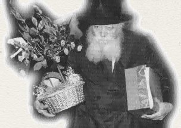

A Gift for the Rebbe

I will share with you one of the birthday gifts that I sent the Rebbe, 28 years ago in 5738 (1978). When we arrived in Tzfas 33 years ago, on the Rebbe’s shlichus, I had a number of goals. One of these goals was to teach kallos and married women the laws of family purity. I was also committed to working with the youth to be mekarev them to Yiddishkait.
I went to different schools and made Shabbos parties with the children on Friday. The children always looked forward to it. When we saw that this was successful, we planned a pre-bar and bas mitzva program at Public School #3 in the south of the city. The principal liked the idea, as did the homeroom teacher of the sixth grade, Mrs. Esther Motai. They even agreed to separate the boys and girls once a week for these classes.
So every week I gave a shiur for girls as a preparation for their bas mitzva (on my day off and of course I wasn’t paid). The teachers attended it too and found it very interesting. Various pamphlets on Chassidus that talk about bar mitzva and bas mitzva were helpful.
We had a special notebook that we called “Jewish Thought.” The girls decorated it and looked forward to the class. Mothers were also happy about the class. I was asked to speak at an evening program for mothers and all went well.
In honor of Yud-Alef Nissan that year, I decided to send the Rebbe the most beautiful notebooks. I told the girls about this and the competition was fierce. All the girls worked hard to make their notebook the most attractive. Excitement ran high – they were sending a gift to the Rebbe!
We wrote a nice letter and the girls and teachers signed to heartfelt brachos in honor of the Rebbe’s birthday and we sent the five nicest notebooks with the letter.
To our great surprise, during S’firas HaOmer I received a letter from the Rebbe, which contained three letters: one for the girls of Public School #3, one for the teachers of the public schools of Tzfas, and one for me. In my letter the Rebbe wrote, “Enclosed are two letters for the teachers and students and certainly, if more of an explanation is required, you will find the proper way to do so,” as well as brachos.
To the girls, the Rebbe wrote:
I was pleased to receive, through Mrs. Chaya Rochel Hendel, your wishes and blessings for my birthday along with your notebooks. It has already been said in the words of our Sages, who say, “Whoever blesses is himself blessed,” from Hashem, the Source of blessing, Whose addition is greater than the original.
I enjoyed seeing the notebooks that are about Jewish-Thought and it is certainly superfluous to emphasize the p’sak din of our Torah, the Torah of life, that the main thing is action, the action of mitzvos and conducting oneself according to authentic Jewish thought. Especially according to the saying of our Sages that the mitzvos were given to refine the Jewish people, i.e., they refine and purify – effecting the realm of thought as well: “Hashem wanted to refine the Jewish people, therefore He gave them Torah and mitzvos.” May each of you and all of you together go from strength to strength in all the aforementioned and may Hashem grant you success. With blessing.
The Rebbe wrote an interesting letter to the teachers, which we copied. We then explained to all of them the significance of the Rebbe’s message. The success (and simcha) was enormous.
However, shortly thereafter, the Satan mixed in and one day a supervisor came and said that Chabad was no longer welcome at the public schools in Tzfas. Our wonderful work came to a stop and we were quite upset.
I was reminded of all this and it occurred to me that maybe we should try to restart this program. May Hashem grant us success.
* * *
As the years went on, Chabad schools were opened in Tzfas. I worked at Beis Chana and Machon Alte. Ten years down the road I sat down one day in Machon Alte and taught the girls in a large room, when suddenly, a girl walked in. She greeted me heartily, and said, “Finally we meet!” We hugged and kissed as though we had both waited for this moment and it was awkward for me since I didn’t feel I could ask her who she was!
I began the shiur while wondering who the girl could be. Who was so happy to see me? I tried to remember but came up blank. I decided I couldn’t ask her because she could feel insulted that she felt so close to me while I didn’t even recognize her.
At the end of the shiur, she came over to me and hesitantly asked me, “Ah, where do we know each other from?”
We began to laugh. I tried to remember and finally placed her. She was Vicki, one of the girls in the sixth grade in the bas mitzva program at Public School #3. She had been there when the Rebbe’s answer had arrived. Now, ten years later, she came to learn about Judaism.
That’s when we saw the fulfillment of the verse in Koheles, “cast your bread upon the waters for after many days you will find it.” We became very close and she was our guest on many a Shabbos. We also invited her parents. Her father was the administrator of a clinic at the hospital in Tzfas and her mother was a lovely woman, a child of Romanian immigrants.
At first, there was some opposition from her parents but as we learned from experience, we take recalcitrant mothers to weddings of girls from the Machon so they see true joy (with a mechitza etc.).
We took Vicki’s mother to one of the girl’s weddings and the simcha was so great that she said to me, “I’ve never seen simcha like this. This is the kind of wedding I want for my daughter!” Baruch Hashem, her daughter also had a Chassidishe wedding.
Today, Vicki has seven children (or eight, I don’t remember) and runs a beautiful Chassidishe home. We’ve kept in touch and she’s truly a source of nachas to her parents.
How important it is to work with the youth, for so much can be accomplished with them. Israeli youth do not study Judaism, so every crumb given to them is so important and has long-range effects.
You would be surprised, but even the children who learn in our own mosdos need chizuk. Erev Purim I went around to the classes in Ohr Menachem and Beis Chana in Tzfas. More than half the girls, who are not from Lubavitcher homes but from religious homes, do not hear the Megilla read on Purim day. This is because the men hear it early in the morning in shul and the women couldn’t manage to come that early, and over the years, they left the work to the men.
However, the mitzvos of Purim are for women as well as for men! So we made a campaign in school that whoever heard the Megilla read twice and took other girls or her mother along with her, would be in a raffle for s’farim. The girls were terrific! For the first time, they heard the Megilla at night and by day.
There was a woman who wanted to hear the Megilla read by day thanks to our campaign, but they had to travel somewhere. In the end, the entire family traveled and on the way, one of the family members read the Megilla from a kosher Megilla. When he said Haman’s name and they had nothing to bang with, the father honked!
Now, for Pesach, the big mivtza is eating handmade shmura matza. One year, the girls in Ohr Menachem-B’nos worked on this. The principal and teachers convinced the girls, who convinced their families to eat only this kind of matza on Pesach. What a great z’chus it is, as the Arizal writes, “Whoever is careful about a drop of chametz is guaranteed he won’t sin all year.” What an impact eating only handmade shmura matza has!
Surely every teacher, wherever she may be, has an enormous influence on her environment. We cannot take it easy; we must persuade everyone to buy only round, handmade shmura matza!
* * *
As we approach the special day of Yud-Alef Nissan, let us each think of an appropriate gift for the Rebbe, one that will please him. The Rebbe is here for us, constantly listening to our problems and giving us his brachos. Let us repay him in some small way for all he does for us. Let us bring about the hisgalus of Melech HaMoshiach now!
Rhendel. "A Gift for the Rebbe." Beis Moshiach, no. 550 (April 12, 2006).